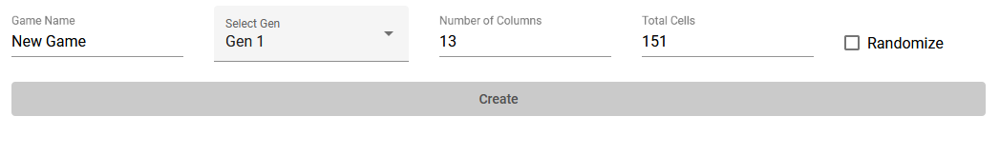

My name is Wyatt, (aka AHP) and this is an app I made to assist people in playing "Pokemon Battleships" on Twitch. It allows you to create a game with various settings such as the number of Pokemon, whether the order should be randomized, and the board layout, and then simply by copy pasting and sending the link to a friend, you can connect to the same game and get live updates about what shots your opponent is firing and vice-versa.
It's the fun new way to play Pokemon with a friend. Typically players will stream on Twitch and play a randomized ROM with the same seed and settings. Using two Pokedex trackers with the same layout, each player marks off the position of their 5 ships, just like in regular Battleships, and when you catch a Pokemon it counts as firing a shot.
Until I made this app, that would involve announcing each and every shot to your opponent and waiting for them to check their board to see if it's a hit. Obviously that can get distracting and be time consuming. With this new app I've made, each player only has to focus on firing shots for the Pokemon they've captured -- the app automatically tells you if your shots are a hit and if your opponent's fired a shot that hits one of your ships.
Below you'll see the UI for the New Game form.
Pick a name for your game if you want to.
Choose the generation of Pokemon game you're playing. Currently this app only supports Generations I - III and presumes the use of a ROM randomizer that includes all the Pokemon in the National Dex up to that point. In the future I'd like to include support for custom sets of Pokemon, including the 'vanilla' Regional Dex lists for each game, but that will depend on if there's enough interest from users.
This determines the shape of the board. By default, it will try to generate as "square" a board as possible, but for later gens it may look better on your layout to add more room for columns. Once the game is generated, the layout cannot be changed.
This determines the total number of cells on the board with Pokemon placed in them. If you want to limit the number of relevant Pokemon you can lower this number, but if you're not using the randomize feature, it will cut off the Pokemon included after that Dex number (i.e. a 100 cell, non-randomized game always ends with Voltorb.)
This feature randomizes the order of the Pokemon placed on the board, and is highly reccomended so that horizontal ships don't tend to contain evolutionary lines.
On the left you will see the 5 ships you have available to place. Simply click on one to select it and then click somewhere on the board to place it. You can also right-click to change the orientation from horizontal to vertical or vice-versa.
To allow another player to connect to your game, simply copy this URL in your browser and send them the link. When they navigate to the page they will automatically be connected. Be careful though: your "user" ID is automatically set up based on the connection of a particular browser on a particular machine, so once a player is connected they won't be able to connect to the same game in another browser or on another machine.
Once you click the button to start the game, your ships' positions are set and you cannot go back and change them. If your opponent hasn't connected or is still placing their ships you'll see a message to wait. You can review the position of your ships and what shots your opponent has taken in the "Your Ships" tab. You will also see an alert at the bottom of the screen whenever your opponent fires a shot.
When you click on a Pokemon to fire your shot, there will be a 3 second countdown timer during which you can click anywhere to cancel your shot. It also displays the name of the Pokemon you've clicked on. That way if you click the wrong cell accidentally you will have a chance to correct it before sending the shot to your opponent. There is also a running total of the number of shots you've fired in the bottom right corner. In the bottom left is a filter where you can search by name, to remove the Pokemon you're not looking for. Clicking the 'x' icon that appears next to the filter or hitting the 'escape' key will automatically clear it, as will firing your next shot.
Additionally, you can 'mark' certain cells by right-clicking on them, so you can make deductions about where your opponent's ships might be.
This application is designed to work with Pokemon ROMs that have been randomized by Dabomstew's Universal Pokemon Randomizer. It will make all Pokemon in the National Dex available in your ROM, including those that require trade evolutions. There are also additional settings that make Pokemon Battleships much more accessible such as altering encounter tables and increasing catch rates for various Pokemon. Refer to the instructions on the UPR website for more information.